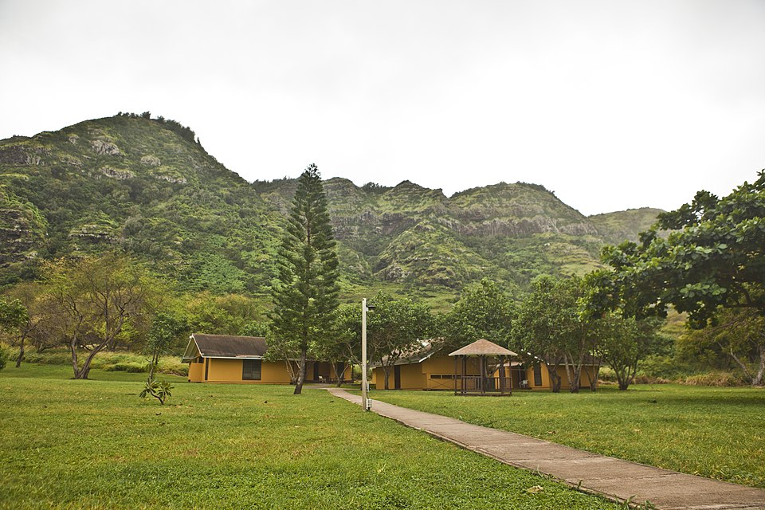

Camp Erdman
Place: YMCA Camp Erdman, Mokulēʻia, Oʻahu
Type: YMCA youth camp / outdoor education center / commemorative place name
Namesake: Harold Randolph Erdman (1905–1931), Hawaiʻi businessman and polo player whose family donated the camp property in his memory
Story it tells: How a beachfront camp established in 1926 became a memorial to a young member of the Dillingham family and a beloved destination for generations of Hawaiʻi children.

YMCA Camp Erdman sits along the coast of Mokulēʻia, beneath the Waiʻanae Mountains on Oʻahu's northwestern shore. This coastline was part of the traditional district of Waialua, where Hawaiian communities relied on fishing, farming, and the resources of the surrounding land and sea. The name Mokulēʻia is commonly interpreted as "district of abundance," reflecting the area's natural resources. The coastline later was acquired by the Dillingham family, whose ranching and equestrian activities helped shape the modern and surrounding landscape.
The camp began in 1926 as Camp Mokulēʻia, when businessman Walter F. Dillingham leased ten acres of beachfront property to the YMCA for one dollar annually, with a requirement that campers plant 1,000 ironwood trees each year. Its present name honors Harold Randolph Erdman, a young businessman and polo player whose mother, Marion Dillingham Erdman, belonged to the prominent Dillingham family. In 1931, Harold suffered fatal injuries during a polo match at Kapiʻolani Field and died at just 26. The following year, his mother and aunt, Mary Dillingham Frear, donated the camp property to the YMCA in his memory. Renamed Camp H.R. Erdman, the grounds became a tribute to a young man whose life had been closely connected to the family's North Shore ranching and polo traditions.
During World War II, Camp Erdman temporarily exchanged its role as a youth retreat for military service. The U.S. Army used the grounds to house engineering personnel working on coastal defenses. The property later became a rest and recreation facility for Navy officers serving in the Pacific. Military use continued until 1946, when the YMCA regained the grounds and resumed youth camping. The wartime occupation left behind improvements that helped support the camp's postwar growth.
Over the following decades, summer camps, overnight school excursions, and outdoor education programs brought children to Camp Erdman in Mokulēʻia to swim, explore the coastline, and experience life away from home. Beginning in 1967, the camp developed a partnership with Hawaiʻi's public schools, expanding its role as an outdoor classroom. Its distinctive yellow cabins later gained an entirely different kind of recognition when the television series LOST used the camp and surrounding area as the fictional settlement known as Dharmaville, or the Barracks, home to the mysterious Others.
Today, Camp Erdman continues operating as a YMCA youth camp and outdoor education center, offering programs for children, families, and community organizations. Celebrating its centennial in 2026, the camp remains a fixture of the Mokulēʻia coastline, where its name preserves the memory of Harold Randolph Erdman.